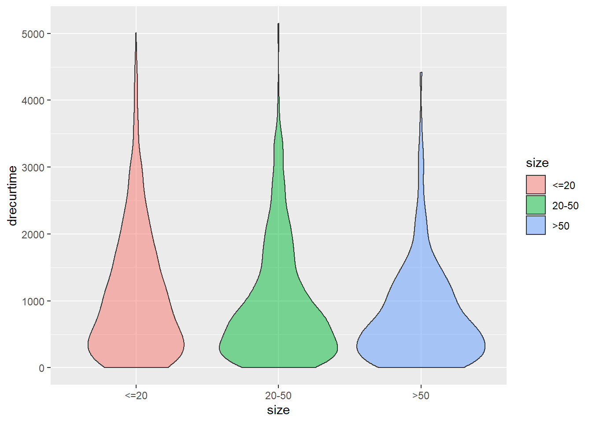
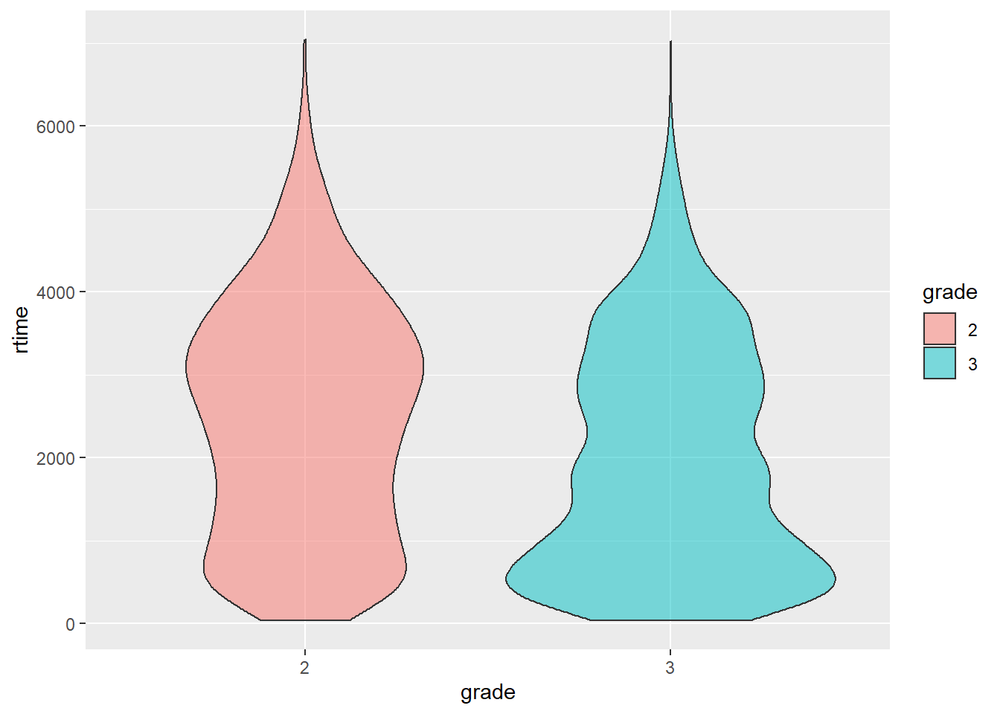
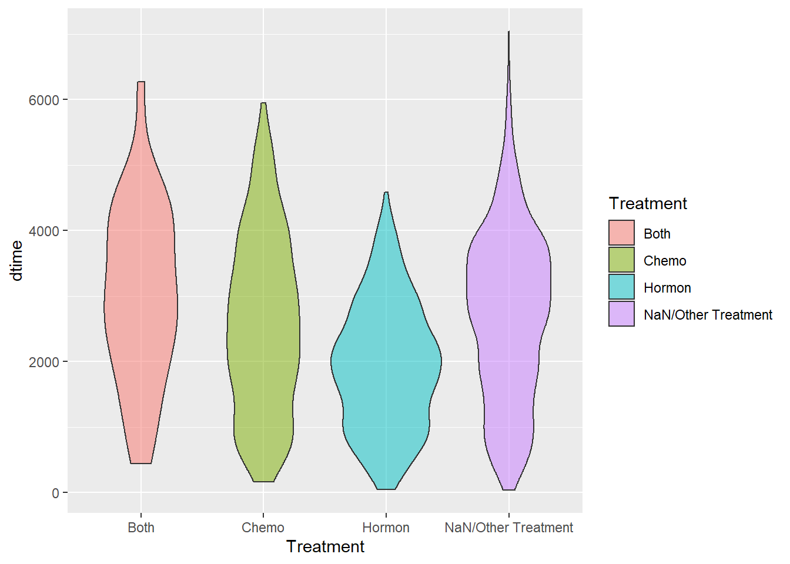
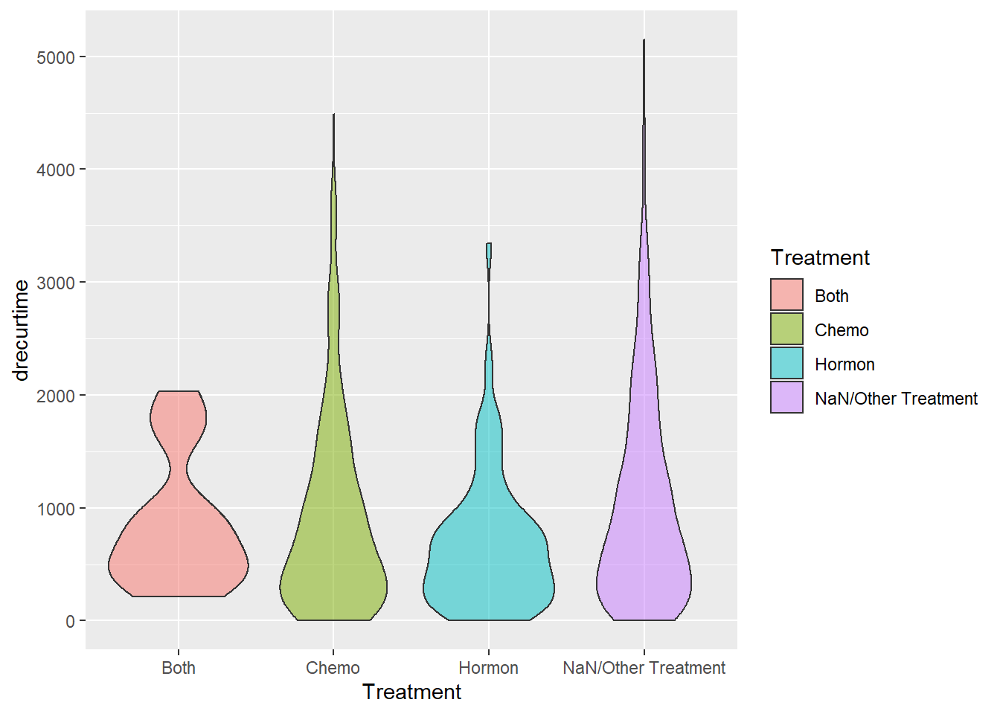

Chapter2 Data Exploration
2.1 Loading Data
The data that we are going to use is called rotterdam, and it is a dataset that’s pre-recorded in the survival package. According to the documentation of the package, the data are retrieved from the Rotterdam tumor bank, which include various anonymous information of 2982 breast cancer patients. Below is a table of the variables in the dataset:
| Variable name | Description |
|---|---|
pid |
patient identifier |
year |
year of cancer incidence |
age |
age |
meno |
menopausal status (0= premenopausal, 1= postmenopausal) |
size |
tumor size, a factor with levels <=20, 20-50, >50 |
grade |
tumor grade |
nodes |
number of positive lymph nodes |
pgr |
progesterone receptors (fmol/l) |
er |
estrogen receptors (fmol/l) |
hormon |
hormonal treatment (0=no, 1=yes) |
chemo |
chemotherapy |
rtime |
days to recurrence or last follow-up |
recur |
0= no recurrence, 1= recurrence |
dtime |
days to death or last follow-up |
death |
0= alive, 1= dead |
From the description above, we see that there are size standing for the size of the tumor, nodes standing for how many lymph nodes are test cancer positive, and grade standing for an metric of metastasis, so we have all three criterions suggested in the background info.
2.2 Data Wrangling
2.2.1 T(Tumor)N(Node)M(Metastasis)
2.2.1.0.1 size for T(Tumor):
## # A tibble: 3 x 2
## size number
## <fct> <int>
## 1 <=20 1387
## 2 20-50 1291
## 3 >50 304We can see that most of the patients in the database have tumor size smaller than 50mm.
2.2.1.0.2 nodes for N(Node):
The number of lymph nodes tested positive is another important measure in the TNM system.
For visualization purpose, we will make a new categorical variable called Nodes_level. For lymph nodes tested positive, the usual medical way of classifying the severity would be:N0 for no positive nodes; N1 for 1-3 positive nodes; N2 for 4-9 positive nodes; and N3 for more than 10 nodes. We will follow this classification method.
rotterdam <- rotterdam %>%
mutate(Nodes_level = ifelse(nodes == 0, "N0",
ifelse(nodes >= 1 & nodes <= 3, "N1",
ifelse(nodes >= 4 & nodes <= 9, "N2",
ifelse(nodes >= 10, "N3", NaN)))))
rotterdam %>%
group_by(Nodes_level) %>%
summarise(number = n(), .groups = 'drop')## # A tibble: 4 x 2
## Nodes_level number
## <chr> <int>
## 1 N0 1436
## 2 N1 764
## 3 N2 515
## 4 N3 2672.2.1.0.3 grade for M(Metastasis):
## # A tibble: 2 x 2
## grade number
## <fct> <int>
## 1 2 794
## 2 3 2188In our dataset, we could see that all of the breast cancer patients are in grade II or grade III, which means that the cancer cells may start shifting to other parts of their body.
2.2.2 Treatment
As we were examining through the data, we found that upon the chemo variable and the hormon variable, there are instances where patients gets both therapy or neither. So in order to explore the relationship between treatment and survival, we introduce a new variable called Treatment, using the chemo and hormon variables.
rotterdam <- rotterdam %>%
mutate(Treatment = ifelse(chemo == 1 & hormon == 0, "Chemo",
ifelse(chemo == 0 & hormon == 1, "Hormon",
ifelse(chemo == 1 & hormon == 1, "Both", "NaN/Other Treatment")))) %>%
mutate(Treatment = as.factor(Treatment))Note that in this manner as we try to ‘merge’ two binary variables into one variable with four levels, we are assuming interaction between chemo and hormon.
rotterdam_recur <- rotterdam %>%
filter(recur == 1) %>%
mutate(drecurtime = dtime-rtime)
nrow(rotterdam_recur)## [1] 1518We also thought it would be of interest to invesigate how recurrnce of tumor might affect the survival of the patient. We made a new dataset called rotterdam_recur, which only include patients with recur = 1. Now the dataset contains 1518 data points, a little over the original rotterdam dataset. We will label the time from recurrence to death as drecurtime in the new data frame.
2.3 Data visualizations and exploration
2.3.1 Diagnostics vs. Survival Times
It is commonly considered that the earlier the breast cancer is detected and the earlier it is treated, the longer survival a patient might enjoy. Thus we think it is important to first look at the diagnostics before treatment and visualize their relationship with survival times.
size vs. dtime

size vs. rtime
size vs. drecurtime
ggplot(data = rotterdam_recur, aes(x = size, y = drecurtime, fill = size)) +
geom_violin(alpha = 0.5)
As we can see from the three plots above, tumor size could be an important factor that affects patients’ survival time and recur time. For size smaller than 20, most of the patients are able to survive or encounter recurrence after roughly 3000 days. But for size 20-50 and >50, it’s highly likely for cancer cells to recur in 500 days. However, after cancer cells have recurred, most patients could not survive over 2 years.
Nodes_level vs. dtime
ggplot(data = rotterdam, aes(x = Nodes_level, y = dtime, fill = Nodes_level)) +
geom_violin(alpha = 0.5)
Nodes_level vs. rtime
ggplot(data = rotterdam, aes(x = Nodes_level, y = rtime, fill = Nodes_level)) +
geom_violin(alpha = 0.5)
Nodes_level vs. drecurtime
ggplot(data = rotterdam_recur, aes(x = Nodes_level, y = drecurtime, fill = Nodes_level)) +
geom_violin(alpha = 0.5)Similarly, nodes is also a factor impacting the life of breast cancer patients. In fact, for patients with high Nodes_level, it is typically considered they are either having metastasis of the cancer or already experiencing a regional recurrence of the cancer. Thus, we could see that most patients with N2 or N3 Nodes_level experience recurrence shortly after treatment. However, after tumor has recurred, most patients could not survive over 2 years.
grade vs. dtime

grade vs. rtime

grade vs. drecurtime
ggplot(data = rotterdam_recur, aes(x = grade, y = drecurtime, fill = grade)) +
geom_violin(alpha = 0.5)
We noticed that a larger proportion of patients in grade 3 survived <2000 days than those in grade 2, and pretty much of patients in grade 3 suffer from recurrence of breast cancer in less than 1000 days.
2.3.2 Treatment vs. Survival Times
Next we are also going to look at the effect of different types of treatments on the survival times of breast cancer patients.
Treatment vs. dtime
ggplot(data = rotterdam, aes(x = Treatment, y = dtime, fill = Treatment)) +
geom_violin(alpha = 0.5)
Treatment vs. rtime
ggplot(data = rotterdam, aes(x = Treatment, y = rtime, fill = Treatment)) +
geom_violin(alpha = 0.5)
Treatment vs. drecurtime
ggplot(data = rotterdam_recur, aes(x = Treatment, y = drecurtime, fill = Treatment)) +
geom_violin(alpha = 0.5)
By examing the three plots above, it seems that Treatment would not affect patients’ survival time or recurrence that much. We can find that chemo + hormon is likely to be the one with best curative effect, that patients receiving both chemo and hormon therapy tend to have longer survival time and longer time to recurrence. And the effect of hormon therapy itself seems not that satisfying. However, after tumor have recurred, most patients do not live up to 2 years.
We also found a bi-model shape in NaN/Other Traetment group in rtime vs. Treatment. This may because the two peaks correponds to no treatment and other treatment separately, but currently we don’t have more information investigating the true reason.
2.3.3 age + Treatment vs. Survival Times
age + Treatment vs. dtime
As we were visualizing for Treatment vs. dtime, we found that Hormontherapy generally has a weaker effect than Chemotherapy, but we think there might be some confounding variables that leads to such conclusion. One that we discovered is age:

age + Treatment vs. rtime
It might be difficult to see from the plots right now, so we decided to make a partial plot of the full plot by filtering the patients who did not take either treatment out.
age + Treatment vs. dtime

age + Treatment vs. rtime

From the two plots above we could see that the patients who took either chemo therapy or hormon therapy are clearly clusterd. For the group who only took chemotherapy, most patients’ age are located below 50 years old. For the group who only took hormontherapy, most patients’ age are located above 50 years old. This is because chemotherapy might have more negative effects for patients at larger age than hormontherapy and thus would effect survival if the wrong therapy is given. Generally, hormontherapy is more friendly to elder people but chemotherapy has better effect.
2.3.4 Treatment vs. TNM
Treatment vs. size

We are also interested to see if there are any other factors that would affect a patient’s decision on the treatment he/she takes other than his/her age. We thought we could stick with the TNM system and we started with tumor size. Generally, there is no obvious distinction in the treatment taken among different sizes of tumor as we can see from the plot above.
Treatment vs. Nodes_level

This time we are checking if there are difference in Treatment with respect to different positive lymph node levels. Now we are onto something interesting. We can see that none of the N0 patients in our dataset have taken either chemotherapy or hormontherapy. we think that it is possible that chemotherapy and hormontherapy are for severer patients and they might just be “overkill” for mild patients.
Treatment vs. grade

From the above we can see that for grade 2 and grade 3 breast cancer, there’s not too much difference in the treatment a patient takes.
2.3.5 General X-year Survival Rate
A very important criterion in analysis about cancer is the 5-year survival rate. In order to examine that, we introduce a new variable called 5_year_survival, which indicates 1 if a patients survival time is larger than 5 years and 0 vice versa.
rotterdam <- rotterdam %>%
mutate(dtime_Years = floor(dtime/365)) %>%
mutate(`5_year_survival` = ifelse(dtime_Years >= 5, 1, 0))Now we want to calculate the 5-year survival rate for the population in the dataset.
## # A tibble: 2 x 2
## `5_year_survival` number
## <dbl> <int>
## 1 0 898
## 2 1 2084## [1] 0.6988598And also the important 10-year survival rate.
rotterdam <- rotterdam %>%
mutate(dtime_Years = floor(dtime/365)) %>%
mutate(`10_year_survival` = ifelse(dtime_Years >= 10, 1, 0))Now we calculate the 10-year survival rate for the population in the dataset.
## # A tibble: 2 x 2
## `10_year_survival` number
## <dbl> <int>
## 1 0 2297
## 2 1 685## [1] 0.2297116We can find that the 5-year survival rate for breast cancer is just fine, and around 70% of patients are able to live more than 5 years. However, the 10-year survival rate is still disappointing given the current medical level, and only around 20% patients could live more than 10 years after diagnosis.
## # A tibble: 2 x 2
## grade number
## <fct> <int>
## 1 2 794
## 2 3 2188However, we have to notice that in our dataset, most patients are diagnosed with grade III breast cancer, which is pretty severe. This would give a more pessimistic calculation of 5-year/ 10-year survival rates of breast cancer patients as a whole. In fact, according to webMD.com, the overall 5-year relative survival rate for breast cancer is 90% and the 10-year breast cancer relative survival rate is 84%.
Thus the important point is that female with high risk of breast caner(family inheritance, bad life habits, etc.) should have regular physical examination, with proper screening for breast cancer. Even if diagnosed, do not panic and take treatment as soon as possible. In this way, a breast cancer patients might be able to enjoy longer survival.
Another important yet sad point is that after cancer has recurred, it does not matter what treatment a patient takes and most people do not live up to 2 years if recurred. Thus patients should be extremely careful not getting cancer recurred.